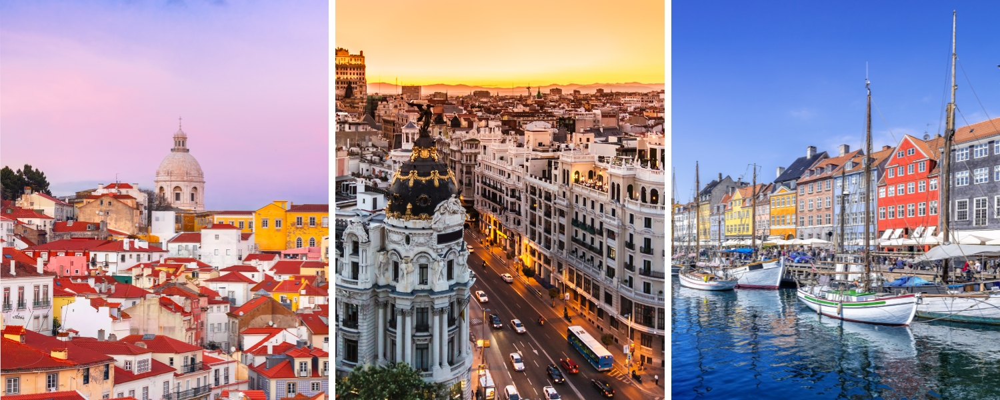

June 24, 2026
Airline NewsHalifax Stanfield Is Quietly Becoming One of Canada's Most Connected Airports
Earlier this month marked a milestone worth celebrating. On June 18, 2026, Air Canada launched its new non-stop service between Halifax and Brussels, Belgium, and watching another European destination get added to a Canadian airport's map got me curious. So I went digging into what else Halifax Stanfield has been up to lately, and the answer turned out to be a lot.
Between the new routes that launched this spring and summer and the impressive roster of services it already runs, Halifax has quietly built itself into one of the most internationally connected airports of its size in Canada and North America. For those of us who love watching Canadian travel grow, this is really exciting stuff.
Let me walk you through what's new and why it matters.
Air Canada's New Halifax to Brussels Route
The headline addition is Air Canada's non-stop service to Brussels, which took off for the first time on June 18. The route runs three times weekly on Tuesdays, Thursdays, and Saturdays through to September 5, with the return legs from Brussels operating Wednesdays, Fridays, and Sundays. It's a summer seasonal service, so it won't run year-round, but it adds a meaningful new option for anyone heading to Europe this season.
Brussels is more than a pretty stopover. It's a major hub for international business, diplomacy, and innovation, and it serves as home to NATO headquarters. For travellers, the real value is in what comes after landing.
The route opens up convenient onward connections across Europe, Africa, and the Middle East through Air Canada's Star Alliance partners, which makes Brussels a useful gateway rather than just a single destination. It also complements Air Canada's existing year-round daily service between Halifax and London Heathrow, so Atlantic Canadians now have two solid options for reaching Europe directly.
WestJet's Three New European Destinations

Air Canada isn't the only airline expanding in Halifax. WestJet rolled out three brand new European connections this spring: Lisbon, Madrid, and Copenhagen. Lisbon service started May 1, Madrid followed on May 15, and Copenhagen joined the lineup on May 28.
These join WestJet's returning non-stop routes to Amsterdam, Barcelona, Dublin, Edinburgh, London Gatwick, and Paris, bringing the airline's European offering in Halifax to nine non-stop destinations for summer 2026.
That number is worth pausing on. Nine non-stop European destinations from a single airline gives Halifax one of the most diverse selections of transatlantic service in the entire country. Even better, WestJet's flights to Copenhagen, Amsterdam, and Paris connect onward to dozens of additional European cities through codeshare partners SAS, KLM, and Air France. And the flight times are reasonable too, with every European route clocking in under eight hours and Dublin reachable in as little as 5.5 hours.
Why This Matters for Canadian Travellers
Here's the bigger picture. Halifax Stanfield served more than 4.1 million passengers in 2025, a 4 per cent increase over the previous year, with international traffic alone jumping nearly 20 per cent. The airport now offers a record 15 non-stop European services for 2026, plus strong connectivity across North America and the Caribbean.
Beyond Air Canada and WestJet, carriers like Discover Airlines, Edelweiss, Icelandair, United, and Delta all run their own routes in and out of Halifax, giving the airport a truly global reach.
There's a practical upside to all of this too. For travellers in Halifax, elsewhere in Nova Scotia, and across Eastern Canada, these direct European routes mean no more backtracking west to connect through Montreal or Toronto. Instead of flying in the wrong direction just to catch a transatlantic flight, you can now head straight from Halifax to where you actually want to be in Europe. That saves time, cuts out a connection, and makes the whole trip a lot less of a hassle.
What I find encouraging is that this isn't a story about a major hub like Toronto or Vancouver getting bigger. This is a mid-size airport punching well above its weight and proving that strong international connectivity isn't reserved for the largest cities.
The Bottom Line
For Atlantic Canadians, it means more choice and fewer connections. For the rest of us, it's a reminder that Canadian aviation is growing in places you might not expect, and that's something worth getting excited about.
If you've been thinking about a European trip this summer, Halifax is suddenly a much more interesting place to fly out of. Both Air Canada's Brussels service and WestJet's expanded European schedule are available for booking.
Happy travels!